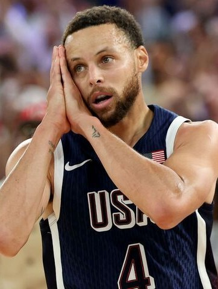
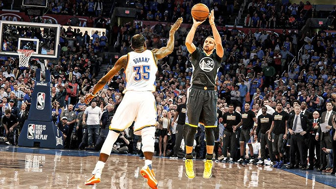
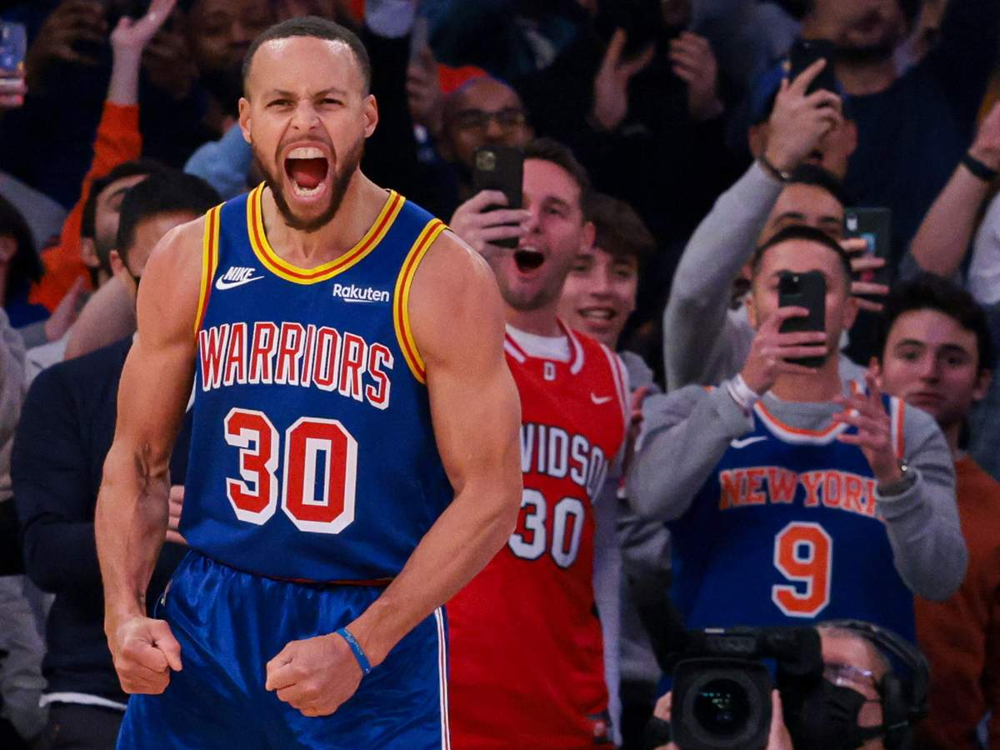
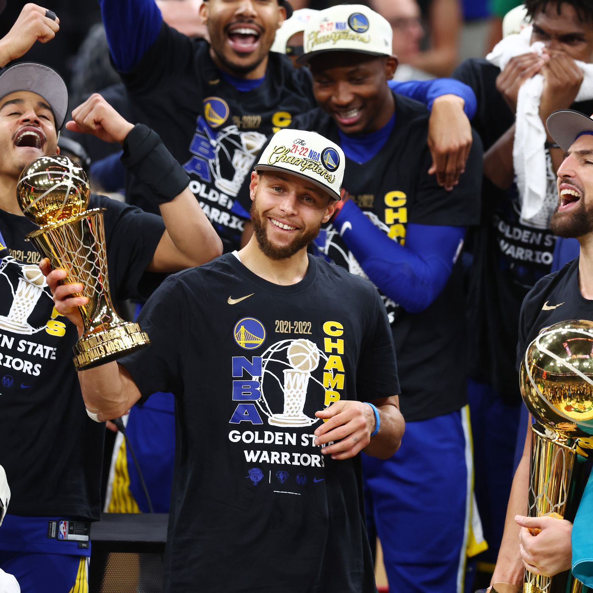
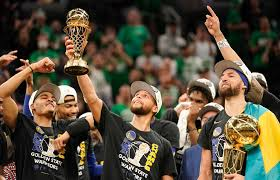
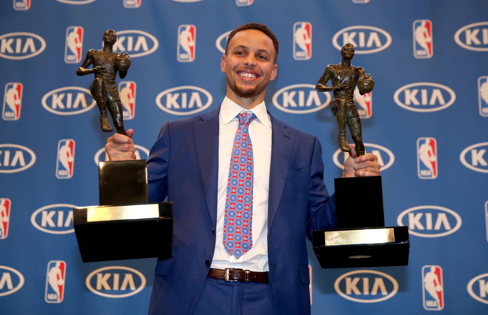
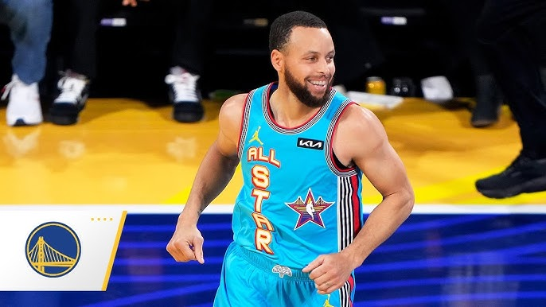
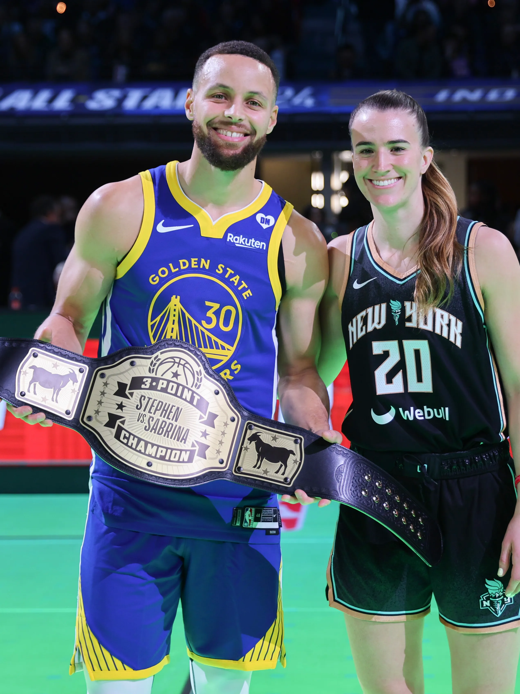
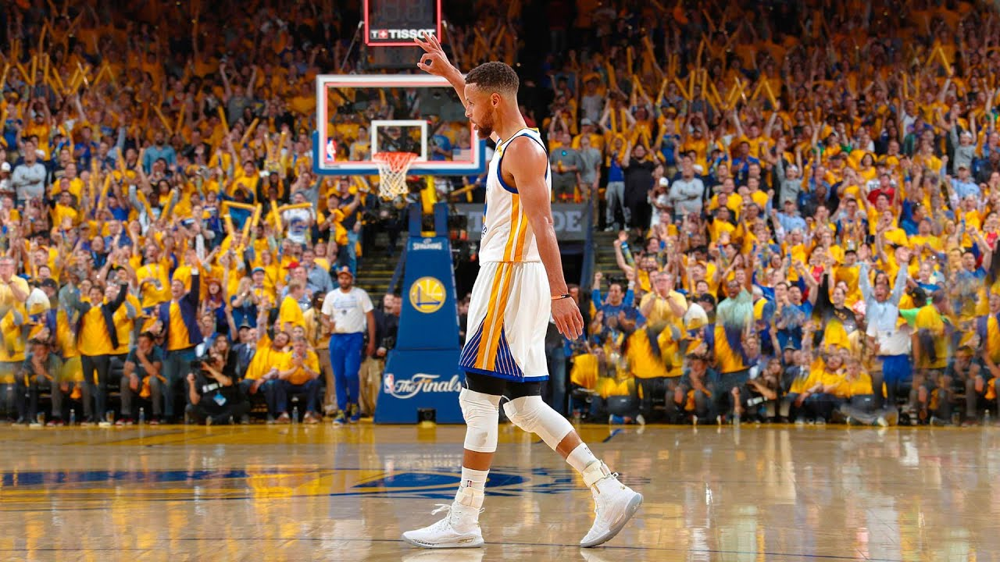
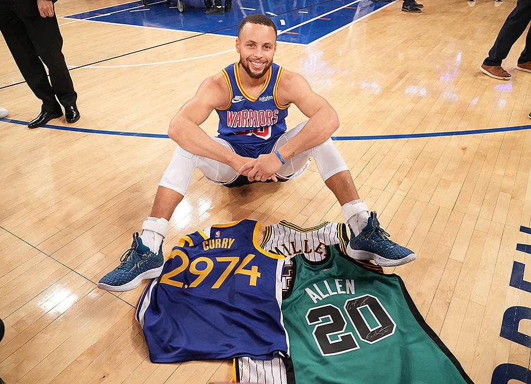

Najlepszy strzelec w historii NBA
Stephen Curry jest rozgrywającym Golden State Warriors który Jest również 4-krotnym mistrzem NBA, 2-krotnym MVP sezonu zasadniczego i rekordzistą pod względem trafionych rzutów za 3 punkty w historii NBA.

Zwycięski rzut z połowy boiska w dogrywce przeciwko Oklahoma City Thunder, ustanawiając rekord NBA - 12 trojek w meczu.

Pobicie rekordu Ray'a Allena w liczbie trafionych rzutów za 3 punkty w karierze, stając się najlepszym strzelcem z dystansu w historii NBA.

Zdobycie pierwszego w karierze tytułu MVP Finałów NBA, prowadząc Warriors do czwartego mistrzostwa w ostatnich ośmiu latach.

4-krotny mistrz NBA z Golden State Warriors

Pierwszy w historii jednogłośny wybór MVP (2016)

9-krotny uczestnik NBA All-Star Game

2-krotny zwycięzca konkursu rzutów za 3 punkty

2-krotny lider NBA w punktach na mecz, ze średnią 30.1 i 32.0 punktów

Rekord wszech czasów NBA w liczbie trafionych rzutów za 3 punkty (3,117)